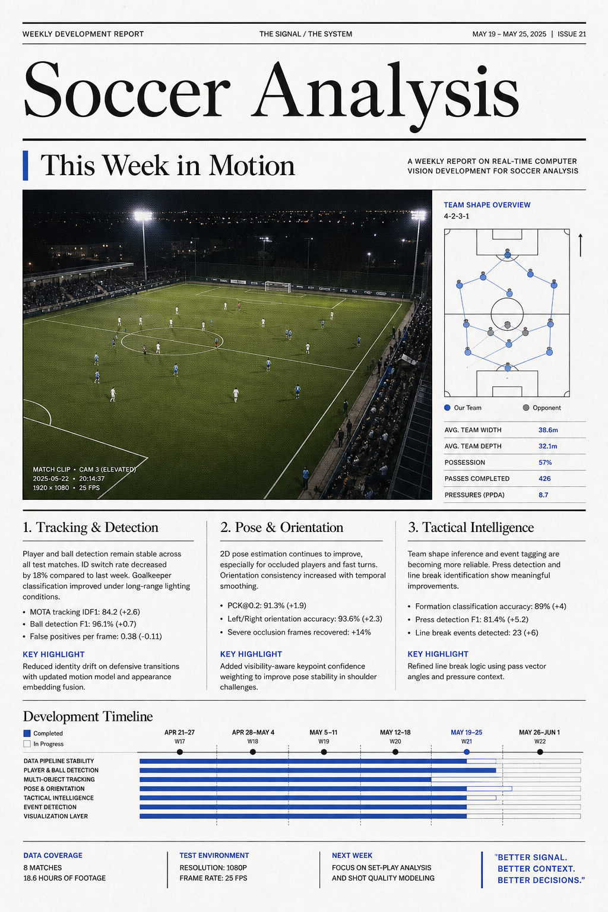
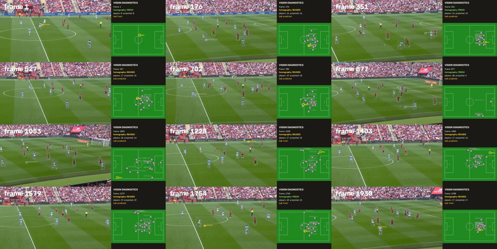

1 / 视觉与实时管线
视觉与实时管线
窗口内共有 7 个文件落在检测、跟踪、几何投影或运行模式相关路径。重点围绕帧级推理、角色语义与状态稳定性展开；报告只陈述 Git 可验证的文件范围，不替代模型精度评测。
关于实时足球计算机视觉系统的周度开发进展、优化与验证证据

窗口内共有 7 个文件落在检测、跟踪、几何投影或运行模式相关路径。重点围绕帧级推理、角色语义与状态稳定性展开；报告只陈述 Git 可验证的文件范围，不替代模型精度评测。
服务层与状态层涉及 3 个文件。该区域连接 FastAPI、WebSocket 与共享状态，是将视觉结果变成可观测系统的关键边界。
前端路径涉及 5 个文件。变化集中在 dashboard 类型定义、渲染层或交互调试链路；实际 UI 体验应结合构建与浏览器验证继续观察。
测试与工具链涉及 5 个文件。当前测试清单约 137 个测试函数，适合作为本周回归范围的基线，而不是通过率的替代品。
文档或验证资产涉及 7 个文件。它们帮助把模型、运行模式与诊断证据固定下来，降低下一轮调试的上下文成本。
测试基线：静态测试清单；本页不把未执行的测试写成“通过”。
